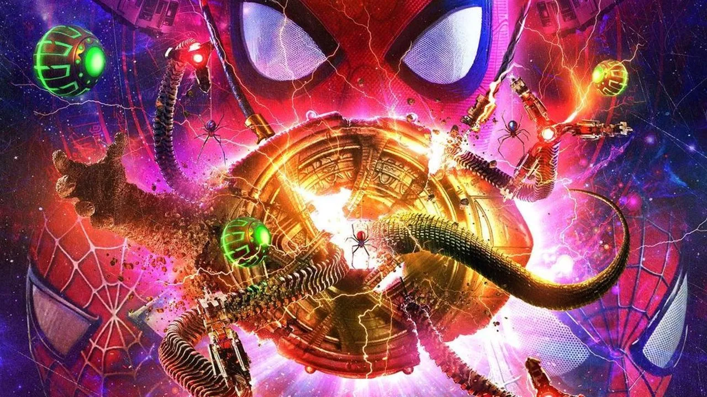
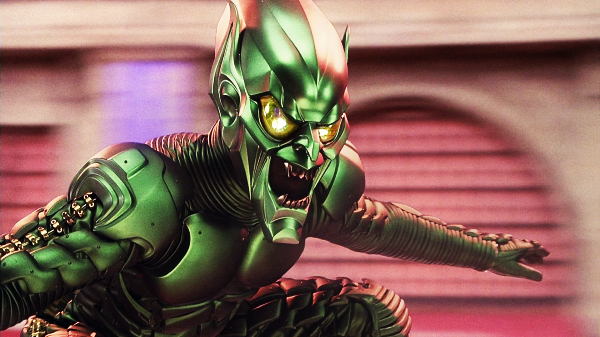

Spider-Man:
No Way Home

Siniestros 6
Electro
Podemos ver un Electro renovado, con más ansias de energía y ganarla con el reactor ARK
Octopus
En este film vemos un doc ock clasico con el mismo deseo de tener el sol en su mano
Duende Verde
El villano estelar, es quien se lleva el protagonismo y quien le da la leccion a Peter.
Lagarto
Un personaje que no agrega nada a la trama, no hay profundidad del personaje ni cambios en él
Venom
Tuvo su aparicion en la escena postcreditos siendo esta en la cual hace parte del universo de Marvel
Arenero
Otro personaje que fue reciclado, tanto en escenas, como en historia y no hay profundizacion en él